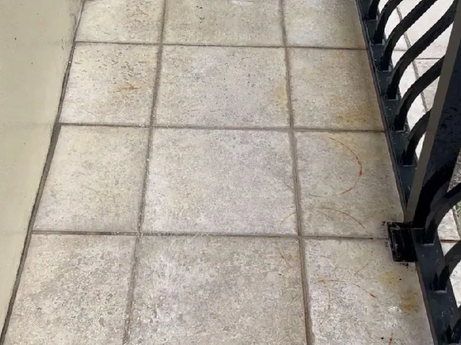
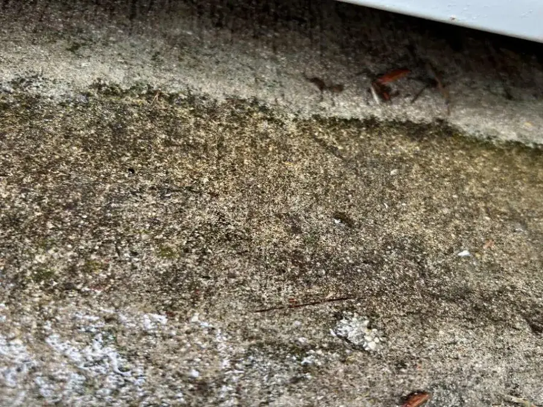
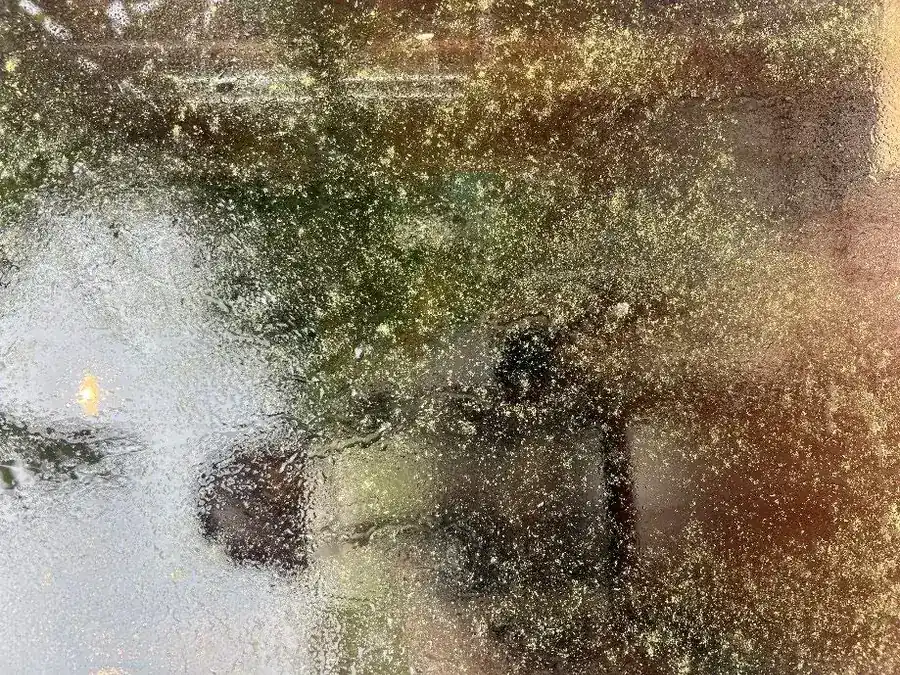

Site cleaning without the storage and exposure risk.
Concrete cleaning, equipment maintenance, rust removal, and site cleanup on active jobs.
How VertKleen fits Construction work.
Concrete, equipment, and exterior cleanup on active sites means acids and bleach in places people are working. VertKleen Descaler clears concrete scale and calcium, HCR removes rust, and LAM3 handles biological growth on exteriors, all with simpler storage and lighter exposure risk.
See the proof
What Construction buyers replace first.
Hydrochloric acid (muriatic acid), bleach, and caustic degreasers used for concrete cleanup, equipment, pavers, and exterior biological growth.
Bundle: Descaler for concrete and calcium, HCR for rust, CRHD for equipment grease, LAM3 for exterior growth.
VertKleen products for Construction.
Replacement options for the legacy chemistry this work usually relies on.
VertKleen on Construction sites.
Real jobs pulled straight from the VertKleen field library.



Plan a lower-hazard Construction program.
Choose a quote, audit, or sample request. MASEST routes the request by industry, product, and volume.